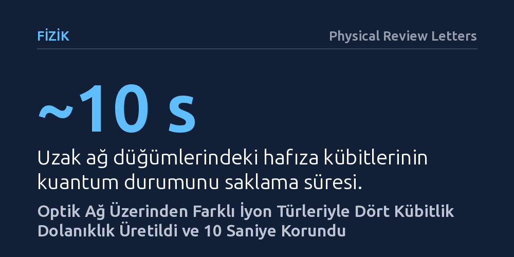

FIZIK · Physical Review Letters · 2026-10-14
Araştırmacılar, uzak kuantum ağ düğümlerinde farklı iyon türleri kullanarak çok parçacıklı dolanıklığın kurulup uzun süre saklanabileceğini araştırdı. Fiber optik hatla bağlanan stronsiyum ve kalsiyum iyonlarıyla dört kübite kadar dolanık kuantum durumları üretildi ve hafıza kübitlerinde yaklaşık 10 saniye boyunca başarıyla korundu.
Farklı iyon türlerinin birlikte kullanılması, iletişim işlemlerinin bellekteki hassas kuantum verisini bozmasını önleyerek pratik kuantum internetinin önündeki en büyük teknik engellerden birini ortadan kaldırıyor.

Geleceğin kuantum interneti ve dağıtık kuantum hesaplama sistemleri, farklı konumlarda bulunan kuantum işlemcilerini birbirine bağlamayı hedefler. Klasik bilgisayarlarda veriler optik kablolar üzerinden kopyalanarak veya güçlendirilerek kolayca taşınabilirken, kuantum fiziğinin temel kuralları gereği bilinmeyen bir kuantum verisi kopyalanamaz. Bu nedenle kuantum bilgisayarlarını bağlamak için uzak noktalar arasında kuantum dolanıklığı adı verilen doğrudan bir fiziksel bağ kurulması zorunludur.
Ancak bu bağı kurmak için kullanılan yöntemler ciddi bir açmaz barındırır. İki düğüm arasında dolanıklık oluşturmak için foton alışverişi yapılırken kullanılan lazer ışınları, aynı tuzakta saklanan kuantum belleklerini kolayca bozar. Hem ağ üzerinden iletişim kuracak hem de elde edilen kuantum bilgisini silinmeden saklayacak güvenilir bir yapı kurulamaması, kuantum ağlarının büyümesini bugüne kadar engellemiştir.
Araştırmacılar bu sorunu çözmek için her ağ düğümünde tek bir atom türü yerine, iki farklı elementin iyonunu birlikte tuzakladı: stronsiyum-88 ve kalsiyum-43. Bu mimaride stronsiyum iyonları ağ arayüzü görevini üstlendi; çünkü bu iyonlar yaydıkları fotonlar sayesinde fiber optik hat üzerinden uzaktaki diğer düğümle hızla dolanıklık kurabiliyor. Kalsiyum iyonları ise mükemmel bir kuantum belleği görevi görerek hassas kuantum bilgisini saklama işlevini üstlendi.
İki elementin optik rezonans frekansları birbirinden tamamen farklı olduğu için, stronsiyum iyonlarıyla iletişim kurulurken kullanılan lazerler kalsiyum hafıza iyonlarını etkilemez. Deneyde, aralarında fiber optik hat bulunan iki düğümdeki stronsiyum iyonları önce fotonlar yoluyla dolanık hale getirildi. Ardından her düğümün kendi içinde uygulanan karışık tür mantık kapılarıyla bu dolanıklık kalsiyum hafıza kübitlerine aktarıldı.
Deney sonucunda araştırmacılar, iki düğüm arasında iki, üç ve dört kübitten oluşan çok parçacıklı dolanık durumları başarıyla üretti. Uzaktaki stronsiyum ile kalsiyum iyonları arasında ve uzaktaki iki kalsiyum hafıza iyonu arasında dolanıklık kuruldu. Ayrıca kuantum ağ protokolleri için kritik öneme sahip olan dört kübitlik karışık tür Greenberger-Horne-Zeilinger (GHZ) durumları oluşturuldu.
Çalışmanın en dikkat çekici bulgusu, uzaktan dolanık hale getirilen hafıza kübitlerinin bu durumu yaklaşık 10 saniye boyunca koruyabilmesi oldu. Bu süre, dolanık durumun oluşturulması için harcanan zamanın 100 katından daha uzundur. Kuantum belleğinin üretim süresinden çok daha uzun süre kararlı kalabilmesi, ağ üzerinde yeni bağlantılar kurulurken mevcut verinin bozulmadan bekletilebileceğini kanıtlamaktadır.
Bu sonuçlar, tek bir çipe binlerce kübit sığdırmak yerine, optik ağlarla birbirine bağlanmış modüler iyon tuzaklarından oluşan dağıtık kuantum işlemcilerinin kurulabileceğini gösteriyor. İletişim kübiti ile hafıza kübitinin fiziksel olarak ayrılması, kuantum ağlarında bilgi kaybı yaşamadan işlem yapmanın uygulanabilir bir yolunu sunuyor.
Bununla birlikte çalışma henüz laboratuvar ortamında iki düğüm ve dört kübitle sınırlıdır. Ayrıca iyonların uyarılması sırasında istenmeyen enerji seviyelerine küçük oranlarda sapmalar yaşanması, her denemenin başarılı olmamasına yol açmaktadır. Yine de elde edilen 10 saniyelik saklama süresi, geleceğin kuantum tekrarlayıcıları ve güvenli kuantum iletişim hatları için sağlam bir deneysel temel oluşturmaktadır.